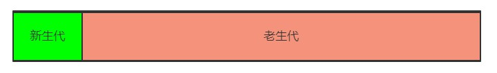
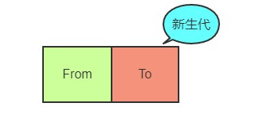
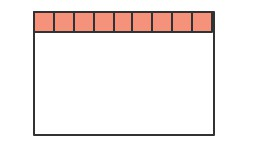
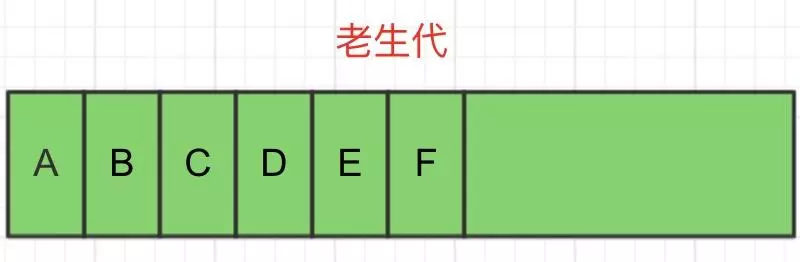
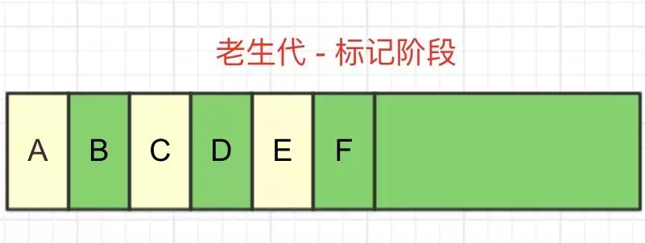
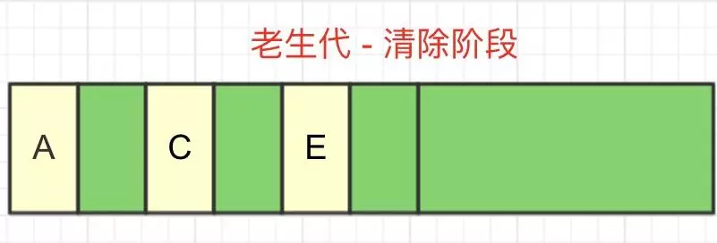
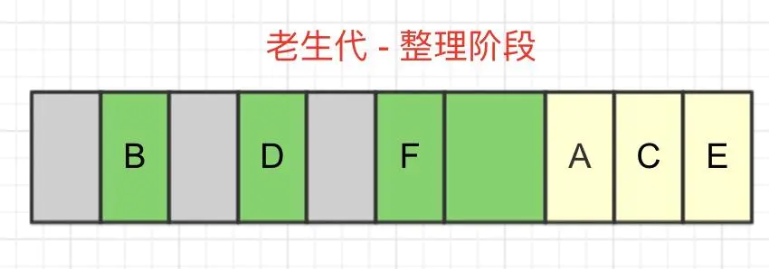
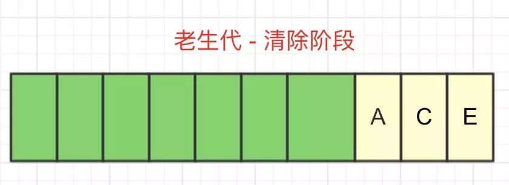

垃圾回收机制
JavaScript 之所以能在浏览器环境和NodeJs环境运行，都是因为有V8引擎在幕后保驾护航。从编译、内存分配、运行及垃圾回收等整个过程，都离不开它。
下面对垃圾回收做一个归纳总结。
为什么会有垃圾回收？
JS 语言不想 C/C++，让程序员自己去开辟或释放内存，而是类似Java，采用自己的一套垃圾回收算法进行自动的内存管理。
垃圾回收的喊出是不需要我们去管理内存，把更多的精力放在实现复杂应用上，但如果写代码时不注意，可能导致循环引用等情况，导致内存泄漏。
内存限制
在其他的后端语言中，如Java/Go, 对于内存的使用没有什么限制，但是JS不一样，V8只能使用系统的一部分内存，具体来说，在64位系统下，V8最多只能分配1.4G, 在 32 位系统中，最多只能分配0.7G。你想想在前端这样的大内存需求其实并不大，但对于后端而言，nodejs如果遇到一个2G多的文件，那么将无法全部将其读入内存进行各种操作了。
为什么要限制其大小？
- js是单线程的执行机制
- 垃圾回收非常耗时
首先JS是单线程执行的，一旦进入到垃圾回收，其它的各种运行逻辑都要暂停；另一方面垃圾回收其实是非常耗时间的操作，V8 官方是这样形容的:
以 1.5GB 的垃圾回收堆内存为例，V8 做一次小的垃圾回收需要50ms 以上，做一次非增量式的垃圾回收甚至要 1s 以上。
js的垃圾回收机制
标记清除
- 标记阶段，垃圾回收器会从根对象开始遍历。每一个可以从根对象访问到的对象都会被添加一个标识，于是这个对象就被标识为可到达对象。
- 清除阶段，垃圾回收器会对堆内存从头到尾进行线性遍历，如果发现有对象没有被标识为可到达对象，那么就将此对象占用的内存回收，并且将原来标记为可到达对象的标识清除，以便进行下一次垃圾回收操作。
- 缺点：垃圾收集后有可能会造成大量的 内存碎片。
引用计数
- 引用计数的含义是跟踪记录每个值被引用的次数，如果没有引用指向该对象（零引用），对象将被垃圾回收机制回收。
- 缺点： 循环引用没法回收。
V8垃圾回收机制
自动垃圾回收有很多算法，由于不同对象的生存周期不同，所以无法只用一种回收策略来解决问题，这样效率会很低。
所以，V8采用了一种代回收的策略，将内存分为两个生代：新生代（new generation）和老生代（old generation）。

新生代：临时分配的内存，存活时间较短的对象
老生代：常驻内存，存活时间长的对象
分别对新老生代采用不同的垃圾回收算法来提高效率，对象最开始都会先被分配到新生代（如果新生代内存空间不够，直接分配到老生代），新生代中的对象会在满足某些条件后，被移动到老生代，这个过程也叫晋升。
分代内存
默认情况下，32位系统新生代内存大小为16MB，老生代内存大小为700MB，64位系统下，新生代内存大小为32MB，老生代内存大小为1.4GB。
新生代平均分成两块相等的内存空间，叫做semispace，每块内存大小8MB（32位）或16MB（64位）。
新生代
首先将新生代内存空间一分为二：

其中From部分表示正在使用的内存，To是目前闲置的内存。
当进行垃圾回收时，V8将From的对象检查一遍，如果是存活对象那么复制到To内存中（在To内存中按照顺序从头放置），如果是非存活对象直接回收即可。
当所有的From中的存活对象按照顺序进入到To内存之后，From 和 To 两者的角色对调，From现在被闲置，To为正在使用，如此循环。
在To内存中按照顺序从头放置的，这是为了应对这样的场景:

深色的小方块代表存活对象，白色部分表示待分配的内存，由于堆内存是连续分配的，这样零零散散的空间可能会导致稍微大一点的对象没有办法进行空间分配，这种零散的空间也叫做内存碎片。刚刚介绍的新生代垃圾回收算法也叫Scavenge算法。
Scavenge 算法主要就是解决内存碎片的问题，在进行一顿复制之后，To空间变成了这个样子:

不过Scavenge 算法的劣势也非常明显，就是内存只能使用新生代内存的一半，但是它只存放生命周期短的对象，这种对象一般很少，因此时间性能非常优秀。
老生代
刚刚介绍了新生代的回收方式，那么新生代中的变量如果经过多次回收后依然存在，那么就会被放入到老生代内存中，这种现象就叫晋升。
生晋升其实不只是这一种原因，我们来梳理一下会有那些情况触发晋升:
- 已经经历过一次 Scavenge 回收。
- To（闲置）空间的内存占用超过25%。
现在进入到老生代的垃圾回收机制当中，老生代中累积的变量空间一般都是很大的，当然不能用Scavenge算法啦，浪费一半空间不说，对庞大的内存空间进行复制岂不是劳民伤财？
V8在老生代中主要采用了Mark-Sweep和Mark-Compact相结合的方式进行垃圾回收。
Mark-Sweep
Mark-Sweep是标记清除的意思，它分为标记和清除两个阶段。
与Scavenge不同，Mark-Sweep并不会将内存分为两份，所以不存在浪费一半空间的行为。Mark-Sweep在标记阶段遍历堆内存中的所有对象，并标记活着的对象，在随后的清除阶段，只清除没有被标记的对象。
也就是说，Scavenge只复制活着的对象，而Mark-Sweep只清除死了的对象。活对象在新生代中只占较少部分，死对象在老生代中只占较少部分，这就是两种回收方式都能高效处理的原因。
我们还是通过流程图来看一下：
step1. 老生代中有对象A、B、C、D、E、F
step2. GC进入标记阶段，将A、C、E标记为存活对象
step3. GC进入清除阶段，回收掉死亡的B、D、F对象所占用的内存空间
可以看到，Mark-Sweep最大的问题就是，在进行一次清除回收以后，内存空间会出现不连续的状态。这种内存碎片会对后续的内存分配造成问题。
如果出现需要分配一个大内存的情况，由于剩余的碎片空间不足以完成此次分配，就会提前触发垃圾回收，而这次回收是不必要的。
Mark-Compact
为了解决Mark-Sweep的内存碎片问题，Mark-Compact就被提出来了。
Mark-Compact是标记整理的意思，是在Mark-Sweep的基础上演变而来的。Mark-Compact在标记完存活对象以后，会将活着的对象向内存空间的一端移动，移动完成后，直接清理掉边界外的所有内存。如下图所示：
step1. 老生代中有对象A、B、C、D、E、F（和Mark—Sweep一样）
step2. GC进入标记阶段，将A、C、E标记为存活对象（和Mark—Sweep一样）
step3. GC进入整理阶段，将所有存活对象向内存空间的一侧移动，灰色部分为移动后空出来的空间
step4. GC进入清除阶段，将边界另一侧的内存一次性全部回收
两者结合
在V8的回收策略中，Mark-Sweep和Mark-Conpact两者是结合使用的。
由于Mark-Conpact需要移动对象，所以它的执行速度不可能很快，在取舍上，V8主要使用Mark-Sweep，在空间不足以对从新生代中晋升过来的对象进行分配时，才使用Mark-Compact。
总结
V8的垃圾回收机制分为新生代和老生代。
新生代主要使用Scavenge进行管理，主要实现是Cheney算法，将内存平均分为两块，使用空间叫From，闲置空间叫To，新对象都先分配到From空间中，在空间快要占满时将存活对象复制到To空间中，然后清空From的内存空间，此时，调换From空间和To空间，继续进行内存分配，当满足那两个条件时对象会从新生代晋升到老生代。
老生代主要采用Mark-Sweep和Mark-Compact算法，一个是标记清除，一个是标记整理。两者不同的地方是，Mark-Sweep在垃圾回收后会产生碎片内存，而Mark-Compact在清除前会进行一步整理，将存活对象向一侧移动，随后清空边界的另一侧内存，这样空闲的内存都是连续的，但是带来的问题就是速度会慢一些。在V8中，老生代是Mark-Sweep和Mark-Compact两者共同进行管理的。
参考：